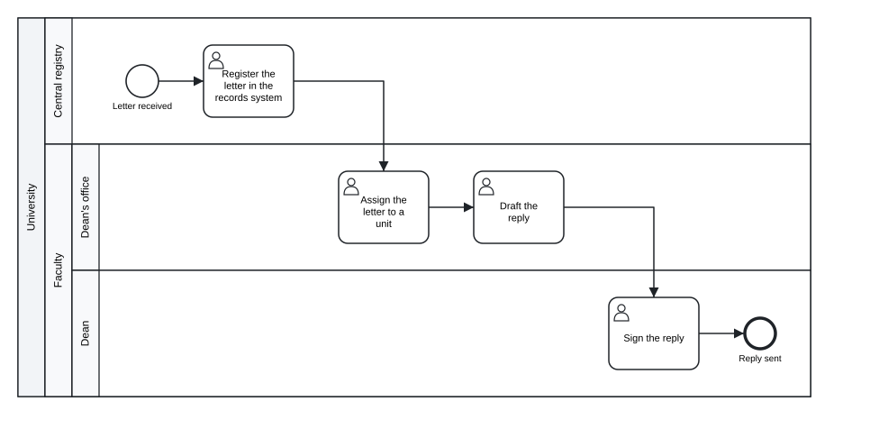
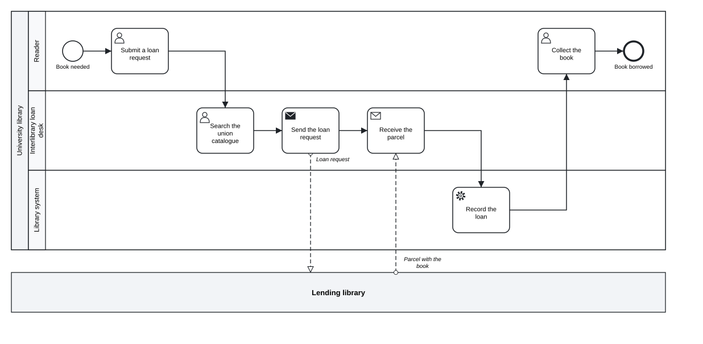
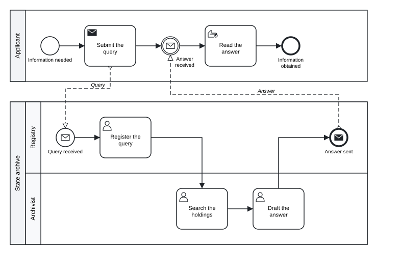
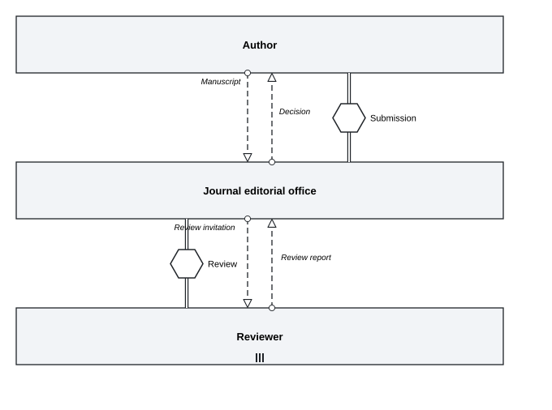
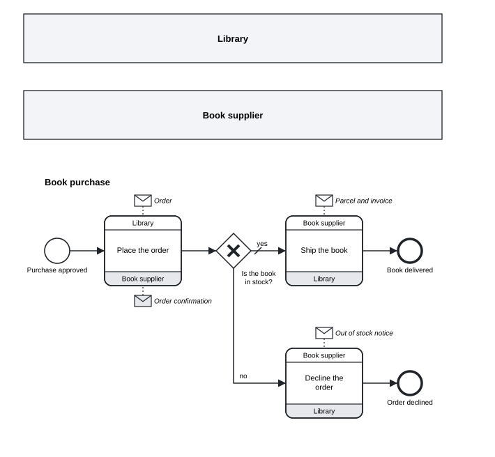

Chapter 4 Pools, lanes and messages
In this chapter you will model collaborations between participants with pools · divide a pool into lanes, nested where needed · use black-box pools for participants whose work you do not model · connect pools with message flows and name their messages · read and correct the structural errors R030, R031, R021 and R022 · describe interactions at a higher level with conversations and choreographies · give a participant a multiplicity
4.1 From one process to a collaboration
The models of Chapter 3 describe one process. Their elements stand at the top level of the document, and the BPMN export puts them into a single process. Real processes rarely end at the door of one organisation. A library orders a book from another library; an archive answers a request from a citizen; a journal waits for reports from external reviewers. BPMN models such situations as a collaboration: several participants, each with its own process, which communicate only by exchanging messages.
In a BPMN diagram, each participant is a pool. Inside a pool, lanes show who does what: roles, departments or systems of that participant. Between pools, message flows (dashed arrows) show the messages; sequence flows never cross the border of a pool. tok writes all of this with the same kind of one-line statements as the rest of the language.
| tok | BPMN 2.0.2 | Diagram |
|---|---|---|
pool with a block |
participant with its process |
a pool with content |
pool without a block |
participant without a process |
an empty (black-box) pool |
lane |
lane |
a row of a pool |
message A -> B "Label" |
messageFlow and its message |
a dashed arrow with a circle at its start |
As soon as a document contains a pool, the export writes a collaboration element with one participant per pool, and the diagram shows the pools stacked one under another.
4.2 Pools
A pool is declared with the keyword pool, an identifier and a label. What the pool means depends on whether it has a block, that is, indented lines below it.
tok 1.0 "Two pools"
pool library "University library"
start need "Book needed"
send order "Send the loan request" message="Loan request"
end sent "Request sent"
pool lender "Lending library"
flow need -> order -> sent
message order -> lender "Loan request"A pool with a block is a participant whose process you model. The export writes two elements for it: the participant and its process. The identifier of the process is the identifier of the pool followed by -process (library-process); the attribute process=ID chooses another one. This matters for executable models, where a process engine shows and starts processes by their identifiers (Chapter 10). The process is named after the title of the document when the document has only one pool with a block, and after the label of its pool otherwise; process-name="Name" sets the name explicitly.
A pool without a block is a black-box pool: a participant whose inner work you do not know or do not need to show. The export writes a participant without a process. In the example, the lending library is a black box; the model shows only that it receives a request.
| Pool attribute | Meaning |
|---|---|
process=ID |
the identifier of the pool’s process (default: the pool identifier followed by -process) |
process-name="Name" |
the name of the pool’s process |
executable |
the pool’s process is meant for a process engine (Chapter 10) |
min=N, max=N |
the multiplicity of the participant (see Participant multiplicity) |
doc="Text" |
documentation of the participant |
A black-box pool must have no block at all. If you accidentally indent a line below it, the pool gets a process, and the line becomes part of it. Keep a blank line after a black-box pool, as the canonical form does, so that the absence of a block is visible.
Once a document has a pool, every event, task and gateway must be inside a pool. An element left at the top level is the error R031: the tools would not know which participant does the work.
4.3 Lanes and nested lanes
A lane is declared with the keyword lane inside the block of a pool. Every flow node indented under a lane belongs to that lane. Lanes may themselves contain lanes, to any depth: a faculty can be divided into its dean’s office and its dean, a department into its teams.
tok 1.0 "Routing an incoming letter"
pool university "University" process=letter-routing
lane registry "Central registry"
start received "Letter received"
user register "Register the letter in the records system"
lane faculty "Faculty"
lane office "Dean's office"
user assign "Assign the letter to a unit"
user reply "Draft the reply"
lane dean "Dean"
user sign "Sign the reply"
end replied "Reply sent"
flow received -> register -> assign -> reply -> sign -> replied
Figure 4.1: Routing an incoming letter: a pool with nested lanes.
Download the model (.tok) Download the BPMN export (.bpmn)
Read the indentation as a path. The task “Assign the letter to a unit” is indented six spaces: it is in the lane “Dean’s office”, which is in the lane “Faculty”, which is in the pool “University”. In the BPMN export, the task is listed in the deepest lane that contains it, and the lanes are nested in the laneSet of the process as the text nests them. The pool has the attribute process=letter-routing, so its process has that identifier instead of university-process.
The flows stand at the end of the document, without indentation, although they connect tasks in different lanes. Inside one pool, steps in different lanes are connected by sequence flows, exactly as in a diagram: a lane is a role within one participant, not a separate participant. Where a flow line stands in the document does not matter; the tools find the process of each flow from its two ends.
Two rules apply to lanes:
- If a pool has lanes, every flow node of its process must be in a lane. A node that stands directly in the pool next to the lanes is the error
R030. - A pool does not need lanes. A participant with one role, or one you do not want to divide, has its flow nodes directly in its block.
4.4 Message flows
A message flow is written with the keyword message, the sender, an arrow, the receiver and a label:
tok 1.0 "Message flows"
pool library "University library"
start need "Book needed"
send order "Send the loan request" message="Loan request"
receive parcel "Receive the parcel" message="Parcel with the book"
end received "Book received"
pool lender "Lending library"
flow need -> order -> parcel -> received
message order -> lender "Loan request"
message lender -> parcel "Parcel with the book"The sender and the receiver are flow nodes or whole pools, and they must be in different pools: a message flow between two elements of the same pool is the error R022. A black-box pool has no inner elements, so a message to or from it always names the pool itself. Each message flow is a line of its own; there are no chains of message flows, because each has its own sender, receiver and message.
The label names the message flow and, unless you say otherwise, the message it carries. Messages in tok are declared by their names: the send task order with message="Loan request" and the message flow labelled “Loan request” refer to one message element in the BPMN file. When the label of the flow should differ from the name of the message, give the name with message=:
tok 1.0 "Message names"
pool library "Library"
start s "Need"
send order "Send the order" message="Purchase order"
end e "Order sent"
pool supplier "Supplier"
flow s -> order -> e
message order -> supplier "Order for 12 titles" message="Purchase order"The identifier of a message flow is derived from its ends, m-order-supplier, unless you give one with id=. You will need explicit identifiers when conversations refer to message flows, later in this chapter.
Not every element can send or receive messages. Tasks can (send and receive tasks are made for it, but a user or manual task can receive a letter too), and so can events with a message trigger and pools. A message flow that ends at a gateway, a data object or an event without a message trigger is the error E009. Conversely, in a model with several pools, a send or receive task or a message event without any message flow gets the warning W054: the diagram promises a message but does not show where it goes.
4.4.1 A collaboration with a black-box pool
The interlibrary loan of Chapter 1 becomes a collaboration when the other library appears as a participant:
tok 1.0 "Interlibrary loan: collaboration"
pool library "University library"
lane reader "Reader"
start need "Book needed"
user request "Submit a loan request"
user collect "Collect the book"
end borrowed "Book borrowed"
lane ill "Interlibrary loan desk"
user catalogues "Search the union catalogue"
send order "Send the loan request" message="Loan request"
receive parcel "Receive the parcel" message="Parcel with the book"
lane system "Library system"
service record "Record the loan"
pool lender "Lending library"
flow need -> request -> catalogues -> order -> parcel -> record -> collect -> borrowed
message order -> lender "Loan request"
message lender -> parcel "Parcel with the book"
Figure 4.2: The interlibrary loan as a collaboration with a black-box pool.
Download the model (.tok) Download the BPMN export (.bpmn)
The university library has three lanes: the reader, the interlibrary loan desk and the library system. The desk sends the request to the lending library with a send task and waits for the parcel with a receive task. The lending library is a black box: the model says what it receives and what it sends, not how it handles the request.
4.4.2 Two processes that talk to each other
When both participants’ processes matter, both pools have blocks. In the next model an applicant sends a query to a state archive and waits for the answer; the archive’s process starts when the query arrives and ends by sending the answer.
tok 1.0 "Archive query: two participants"
pool applicant "Applicant"
start need "Information needed"
send submit "Submit the query" message="Query"
catch answer "Answer received" message="Answer"
manual read "Read the answer"
end done "Information obtained"
pool archive "State archive"
lane registry "Registry"
start received "Query received" message="Query"
user register "Register the query"
end sent "Answer sent" message="Answer"
lane archivist "Archivist"
user search "Search the holdings"
user draft "Draft the answer"
flow need -> submit -> answer -> read -> done
flow received -> register -> search -> draft -> sent
message submit -> received "Query"
message sent -> answer "Answer"
Figure 4.3: An archive query between two participants, each with its own process.
Download the model (.tok) Download the BPMN export (.bpmn)
Here the messages connect events and tasks inside the pools. The archive’s process begins with a message start event: it is started by the arrival of the query. The applicant’s process waits at an intermediate catch event with a message trigger, and the archive’s process ends with a message end event that sends the answer. The names "Query" and "Answer" tie each message flow to the events and the task that send and receive it.
The applicant’s pool has no lanes; the archive’s pool has two. Each pool has its own sequence flows, from its own start event to its own end event, and the two processes are connected only by the two messages. Since the document has two pools with blocks, their processes are named after the pools: “Applicant” and “State archive”.
4.4.3 Correlation keys
When many instances of the same processes run at once, an engine must know which answer belongs to which query. BPMN describes this with correlation keys: properties of the messages, such as a query number, that identify the conversation. tok writes them with key and one prop line per message:
tok 1.0 "Correlation"
pool applicant "Applicant"
start need "Information needed"
send submit "Submit the query" message="Query"
catch answer "Answer received" message="Answer"
end done "Information obtained"
pool archive "State archive"
start received "Query received" message="Query"
user search "Search the holdings"
end sent "Answer sent" message="Answer"
flow need -> submit -> answer -> done
flow received -> search -> sent
message submit -> received "Query"
message sent -> answer "Answer"
key query-number "Query number"
prop number message="Query" path="query.number"
prop number message="Answer" path="answer.reference"Each prop line says where the property is found in one message. A correlation key belongs to a collaboration, so a document with key needs pools. Correlation keys describe the model; Camunda 8 correlates messages differently, with the attribute correlation= of executable models (Chapter 10).
4.5 Structural rules
Pools bring four rules about where elements may stand and what flows may connect. They are checked before the rules of BPMN, and their codes start with R:
| Code | Rule |
|---|---|
R031 |
when a document has a pool, events, tasks and gateways stand inside pools, not at the top level |
R030 |
when a pool has lanes, every flow node of its process is in a lane |
R021 |
a sequence flow connects two nodes of the same process (or sub-process); it never leaves its pool |
R022 |
a message flow connects two different pools |
The following model breaks all four:
tok 1.0 "Routing a letter (with errors)"
start received "Letter received"
pool university "University"
user register "Register the letter"
lane office "Dean's office"
user assign "Assign the letter to a unit"
end assigned "Letter assigned"
flow received -> register -> assign -> assigned
message register -> assign "Letter"tok check 04-lanes-error.tok
04-lanes-error.tok:3: error R031: 'received' is declared at top level, but the document has pools; move it into a pool
04-lanes-error.tok:6: error R030: 'register' is in a pool with lanes but outside every lane
04-lanes-error.tok:11: error R021: sequence flow received -> register crosses a process or sub-process boundary
04-lanes-error.tok:12: error R022: message flow register -> assign must connect two different pools
04-lanes-error.tok: 4 error(s), 0 warning(s), 0 note(s)The first error causes the third. The start event received stands outside the pool, so it does not belong to the university’s process, and the flow from it to register crosses the border of that process. Moving the start event into a lane removes both errors. This is common: one mistake in the structure produces several messages. Correct the diagnostics from the top and check again after each correction.
The fourth error is the most frequent misunderstanding in collaboration models. Registering a letter and assigning it are two steps of the same university; they are connected by a sequence flow, even though different people do them. Messages pass only between participants.
When you are unsure whether two parties are lanes of one pool or two pools, ask whether one of them can give the other an instruction. Departments of one organisation work in one process, under one control: they are lanes. Independent organisations, and people outside the organisation such as customers and readers, only send each other messages: they are pools.
4.6 Conversations
A collaboration diagram with many participants and many messages can become crowded. BPMN offers a more abstract view, the conversation diagram: it shows the participants and the logical exchanges between them, each exchange grouping the message flows that belong together. A conversation is drawn as a hexagon connected to its participants by double lines.
A conversation is declared with the keyword conversation, the pools it links (pools=, at least two) and, optionally, the message flows it groups (messages=, by their identifiers):
tok 1.0 "Peer review: conversations"
pool author "Author"
pool journal "Journal editorial office"
pool reviewer "Reviewer" min=2 max=3
message author -> journal "Manuscript" id=m-manuscript
message journal -> author "Decision" id=m-decision
message journal -> reviewer "Review invitation" id=m-invitation
message reviewer -> journal "Review report" id=m-report
conversation submission "Submission" pools="author journal" messages="m-manuscript m-decision"
conversation review "Review" pools="journal reviewer" messages="m-invitation m-report"
Figure 4.4: Peer review: two conversations between three participants; the reviewer pool has a multiplicity.
Download the model (.tok) Download the BPMN export (.bpmn)
All three pools are black boxes here: the view is about who talks to whom, not about the work inside. The message flows have explicit identifiers (id=m-manuscript and so on), because the conversations name them. The conversation “Submission” groups the manuscript and the decision exchanged between the author and the editorial office; “Review” groups the invitation and the report exchanged with the reviewers.
Conversations can be grouped and reused:
| Statement | BPMN | Meaning |
|---|---|---|
conversation ID "Label" pools="P Q" [messages="M1 M2"] |
conversation |
an exchange between the pools, with the message flows it groups |
subconversation ID "Label" pools="P Q" with a block of conversations |
subConversation |
a group of related conversations, drawn with a + |
callconversation ID "Label" pools="P Q" collaboration=ID [map="inner:outer; …"] |
callConversation |
a conversation defined in another collaboration, drawn with a thick border |
tok 1.0 "Sub-conversations"
pool reader "Reader"
pool library "Library"
pool supplier "Book supplier"
message reader -> library "Loan request" id=m-request
message library -> reader "Pick-up notice" id=m-notice
conversation loan "Loan" pools="reader library" messages="m-request m-notice"
subconversation acquisition "Acquisition" pools="library supplier"
conversation offer "Offer" pools="library supplier"
conversation purchase "Purchase order" pools="library supplier"
callconversation complaint "Complaint" pools="library supplier" collaboration=complaintsThe checker makes sure the parts fit together. A conversation must link at least two different pools, and a conversation inside a sub-conversation only pools of that sub-conversation (R070); every message flow named in messages= must connect two of the conversation’s pools (R071). Conversations stand only at the top level or in the block of a sub-conversation, and the canonical form prints them after the message flows.
Conversations do not replace message flows; they are a view on top of them. The same document can contain the pools with their processes, the message flows and the conversations that group them. The BPMN file then holds all of it, and BPMN tools that support conversation diagrams show them.
4.7 Choreographies
A choreography describes a collaboration from yet another angle: not the work of each participant, but the order of the message exchanges between them, as an observer would see it. Each step is a choreography task, an exchange of a message between two participants, possibly with a reply. The steps are connected by sequence flows and gateways, like the tasks of a process.
A choreography is a top-level block. Its participants are pools of the document, usually black boxes:
tok 1.0 "Book purchase: choreography"
pool library "Library"
pool supplier "Book supplier"
choreography purchase "Book purchase"
start need "Purchase approved"
choreo order "Place the order" from=library to=supplier message="Order" reply="Order confirmation"
xor stock "Is the book in stock?"
choreo ship "Ship the book" from=supplier to=library message="Parcel and invoice"
choreo decline "Decline the order" from=supplier to=library message="Out of stock notice"
end delivered "Book delivered"
end declined "Order declined"
flow need -> order -> stock
flow stock -> ship "yes" default
flow stock -> decline "no" when="in_stock = false"
flow ship -> delivered
flow decline -> declined
Figure 4.5: A book purchase as a choreography, drawn below the pools of the collaboration.
Download the model (.tok) Download the BPMN export (.bpmn)
A choreography task is written with choreo, the initiating participant from=, the other participant to=, the message with message= and, optionally, the reply with reply=. The diagram draws it as a rounded rectangle with a band for each participant: the initiator on top, white; the other at the bottom, shaded. The messages appear as envelopes next to the band of their sender, white for the initiating message and shaded for the reply. The choreography is drawn in a diagram of its own, below the collaboration.
The gateway stock decides on the basis of the order’s content, which both participants know; its branches have labels and a default flow as in a process. The block of a choreography may contain:
- choreography activities:
choreo(a task),subchoreo(a sub-choreography with a block of its own) andcallchoreo(a call of another choreography); - the gateways
xor,and,or,eventgwandcomplex; - events, restricted by BPMN to those that make sense without a participant’s process: a start event without a trigger or with a timer, conditional or signal trigger; intermediate events with a timer, conditional, signal or link trigger; end events without a trigger or with
terminate; - sequence flows between them.
Other elements, such as tasks of a process or data, are the error R073 inside a choreography. A sub-choreography groups several exchanges among several participants:
tok 1.0 "Sub-choreography"
pool reader "Reader"
pool library "Library"
pool courier "Courier"
choreography delivery "Home delivery"
start s
choreo order "Order a book" from=reader to=library message="Order"
subchoreo ship "Ship the book" pools="library courier reader" from=library
start s2
choreo handover "Hand over the parcel" from=library to=courier message="Parcel"
choreo deliver "Deliver the parcel" from=courier to=reader message="Parcel"
end e2
end e
flow s2 -> handover -> deliver -> e2
flow s -> order -> ship -> eThe participants of a sub-choreography are listed with pools= and its initiator with from=; the activities inside it may only involve those participants (R072). A callchoreo names the choreography it calls with choreography=ID, and map="inner:outer" pairs the participants of the called choreography with its own. The flags loop, parallel and sequential mark choreography activities that repeat, as they mark tasks.
Choreographies are useful in the early design of an interaction between organisations, when the parties agree on the order of messages before each designs its own process, and in describing standard exchanges such as a purchase or an interlibrary loan protocol.
4.8 Participant multiplicity
Sometimes several participants of the same kind take part in one collaboration: three reviewers of one manuscript, several suppliers asked for an offer. BPMN expresses this with the multiplicity of a participant, written in tok with min= and max= on the pool:
tok 1.0 "Multiplicity"
pool journal "Journal"
start s "Manuscript received"
send invite "Invite the reviewers" message="Invitation"
end e "Reviewers invited"
pool reviewer "Reviewer" max=3
flow s -> invite -> e
message invite -> reviewer "Invitation"The pool is then drawn with the multi-instance marker, three vertical bars at the bottom, as in the reviewer pool of the peer review conversation above. When only max= is given, the minimum is 2; when only min= is given, the maximum is 1, the default of BPMN. Both are whole numbers with 0 <= min <= max and max >= 1; anything else is the error R074.
4.9 Collaborations, levels and Camunda
Pools, lanes and message flows belong to the core of BPMN. They are accepted at every level of the language, including basic, and every BPMN tool supports them. Correlation keys, conversations, choreographies and participant multiplicity are advanced elements: the levels basic and analytic reject them with R040.
tok check 04-peer-review-conversation.tok --level analytic
04-peer-review-conversation.tok:7: error R040: 'min' is not available at level analytic
04-peer-review-conversation.tok:14: error R040: 'conversation' is not available at level analytic
04-peer-review-conversation.tok:15: error R040: 'conversation' is not available at level analytic
04-peer-review-conversation.tok: 3 error(s), 0 warning(s), 0 note(s)In executable models for Camunda 8, a collaboration is deployed as the processes of its pools; Camunda Modeler shows the pools and lanes, and the engine runs each executable process. The descriptive elements of this chapter are reported where Camunda would ignore or reject them: conversations and participant multiplicity are warnings (Camunda ignores them), choreographies are errors (Camunda does not execute them). Chapter 10 lists these codes, C110 and C120 to C123, and the conformance appendix the coverage of each element.
4.10 The canonical form of a collaboration
tok fmt prints a collaboration in a fixed order that follows the way a reader takes in the model: first who takes part and what each does, then how the work flows, then how the participants communicate.
- The header.
- The pools, each followed by a blank line, with their lanes and flow nodes in the order you declared them.
- The choreographies, each with its nodes and, at the end of its block, its sequence flows.
- The other sequence flows, as chains where possible.
- The message flows, then the conversations.
- The correlation keys.
Data, artifacts, decisions, forms and simulation statements follow, as later chapters show. Whatever order you write a collaboration in, the formatted text of the same model is the same.
Exercises
Exercise 4.1
- Lanes or pools? For each pair, decide whether the two parties are lanes of one pool or two pools, and give the reason: (a) the registry and the dean’s office of a faculty; (b) a library and its reader; (c) a publisher and an external reviewer; (d) the cataloguing team and the library system; (e) an archive and a ministry that supervises it.
- Fix the structure. Download
04-lanes-error.tokand correct it so thattok checkreports no errors. Keep the meaning: the letter is received and registered by the registry, and assigned by the dean’s office. Download the model with errors (.tok) - An archive query with a black box. Model an archive that handles a query from an applicant who is a black-box pool. The archive has three lanes (registry, archivist, head of department). The query arrives as a message; the archivist may ask the applicant for missing details (a send task) and wait for them (a receive task); the head approves the answer; the registry sends it. Write the message flows for the four messages and check the model at the level
fulland the levelbasic. - Open the box. Take the interlibrary loan collaboration and give the lending library a process: it receives the request, checks whether the book can be lent, and either sends the parcel or sends a refusal. Connect the two processes with message flows, and add to the university library an event-based gateway that waits for the parcel or the refusal.
- A conversation view. Draw the conversation diagram of exercise 4: keep the pools and message flows, give the message flows identifiers, and group them into one conversation “Interlibrary loan”. Then add a black-box pool “Courier” and a second conversation “Delivery” between the lending library, the courier and the university library.
- A choreography. Write the exchange of exercise 4 as a choreography between two black-box pools: the request (with an acknowledgement as its reply), a gateway on whether the book can be lent, and the parcel or the refusal. Compare the length of the choreography with the length of the two processes. Which view would you show to the two libraries when they negotiate the procedure, and which to the staff who carry it out?